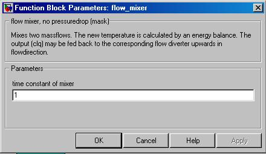

flow mixer
flow mixer Path: CARNOT/hydraulics
flow mixer
Path: CARNOT/hydraulics
Purpose
The block calculates the mixture of two incoming flows.
Description
The block mixes two mass flows. The new temperature is calculated by an energy
balance. For moist air the temperature and moisture content are calculated by
an enthalpy balance and a mass balance. In the mixer, the pressure drop of the
two branches is calculated and added to the pressure drop of the main cycle.
Method to calculate the pressure drop of the two branches :
The pressure drop of the whole flow diversion subcycle is calculated with a quadratic term of the form
Dp = c + l * mdot + q * mdot2
The mixer calculates the diversion of the two branches under the condition, that the pressure drop in both branches must be the same
Dp1 = Dp2= Dp
or
c1 + l1mdot1 + q1mdot12 = c2 + l2mdot22 +q2mdot22
A further condition is that the mass balance has to be fulfilled
mdottotal = mdot1 + mdot2
With these three equations, the quadratic equation is solved for three mass flows : full mass flow mdottotal, half of the entire mass flow and 25% of the total mass flow. With these three values, the parabola of the quadratic pressure drop equation is defined and can be calculated.
Moreover, the flow diversion rate is calculated as : fdiv = mdot1 / mdottotal and is fed back to the corresponding flow diverter upwards in flow direction. This is necessary to give the information on how to divide the mass flow in the diverter to the block upstream, because physically the mass flow is divided according to the flow resistance in each branch. The mixer also receives a branch ID. If the mass flow through one branch is zero (for example because of a closed valve) the ID becomes negative and the mass flow through that branch is set to zero.
Inputs:
Outputs:
Warning: If you have a hydraulic subcycle that contains sub cycles with flow diverters itself, you have to take care to build up the cycle in such a way, that the branch with more diverting elements is connected to the input THV2 of the mixer. This branch must also be connected to the output THV2 of the corresponding diverter upstream to feed back the right information.
Warning: connect
fdiv to the corresponding flow-diverter. Otherwise the massflow-
diversion is not correct.
NOTE: To speed up the
simulation, avoid the fdiv-feedback. If you know the rate flowing
through each branch, short fdiv to ground for flow-mixers and use
the flow-diverter with a fixed rate.
Parameters and Dialog Box

Characteristics
Direct Feedthrough Yes
Sample
time
Inherited
from driving block
Vectorized
No